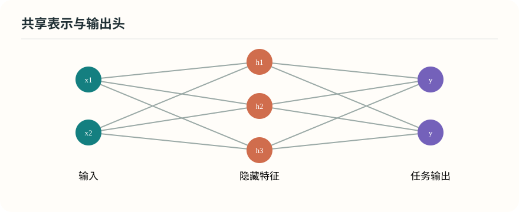
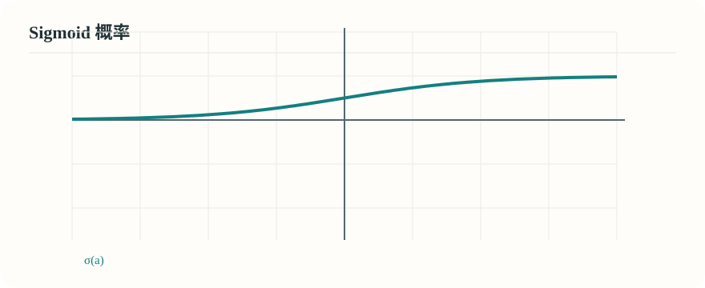
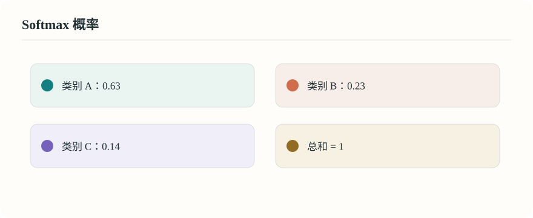
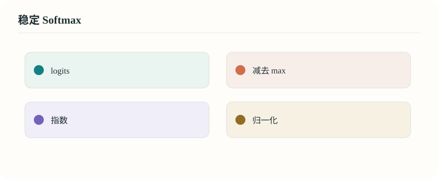
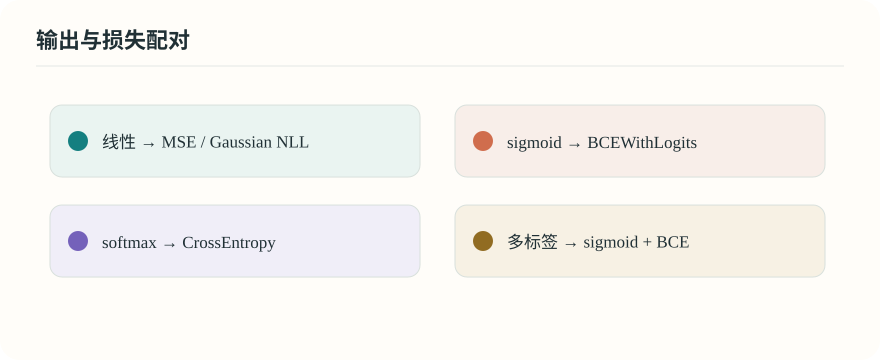
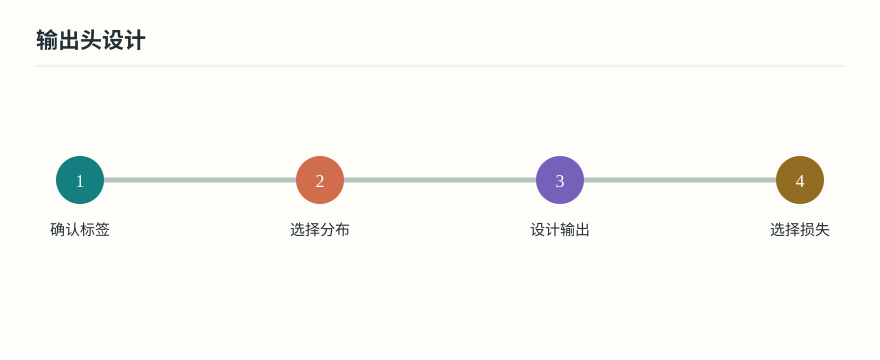

深度前馈网络 · MODULE 04
输出单元：把网络结果变成任务答案
回归、二分类、多分类与多标签，输出层的数学含义并不相同。
输出层要把隐藏表示映射成任务所需的预测对象，通常也承担概率分布参数化的职责。
输出层要把隐藏表示映射成任务所需的预测对象，通常也承担概率分布参数化的职责。
1. 输出层由任务定义
先问模型要预测实数、二值事件、互斥类别中的一个，还是多个可同时成立的标签。这个问题决定输出维度、激活函数和损失。

2. 回归常用线性输出
无界连续目标常用恒等映射，不把结果压缩到固定区间。固定方差 Gaussian 模型中，网络输出可作为条件均值。
3. 二分类用 sigmoid 参数化 Bernoulli
sigmoid 把一个 logit 映射到 (0,1)，可解释为正类概率；负类概率为 1−p。训练时可把 logit 直接交给 BCEWithLogitsLoss。

4. 互斥多分类用 softmax
softmax 把 K 个 logits 转成和为 1 的类别概率。每个类别共享归一化分母，因此一个样本最终选择一个类别。

5. 多标签不是 softmax
一张图可以同时包含汽车、道路和行人。多标签任务通常对每个标签独立使用 sigmoid，而不是把标签概率强制归一化为总和 1。
6. Logits 与数值稳定性
softmax 可以先减去最大 logit，不改变结果但降低指数上溢风险。PyTorch CrossEntropyLoss 接收未归一化 logits，不要先额外执行 softmax。

7. 输出与损失配对
线性输出常配 MSE/Gaussian NLL；sigmoid logits 配 BCEWithLogits；softmax logits 配 CrossEntropy；多标签常用逐标签 sigmoid 与 BCE。

8. 上线前检查
确认输出 shape、类别维、标签编码、logits/probabilities 约定、阈值和 argmax 逻辑。最常见的错误是把互斥多类当多标签，或重复执行激活。

交互实验
切换任务，观察同一组 logits 的不同解释。
交互用于核对公式与数值关系；不是完整训练基准。
可运行示例
import torch
import torch.nn.functional as F
logits=torch.tensor([[1.2,.2,-.5]])
print(F.softmax(logits,dim=-1))
print(torch.sigmoid(logits))参考资料
教材结论、论文结论与本页推导分别标注；图示为独立绘制。